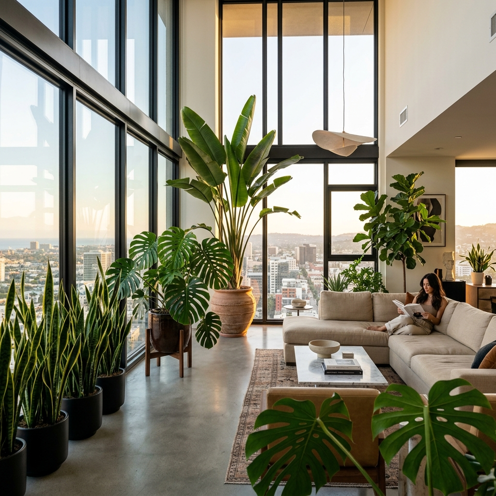

Botanical Care Manuals
Scientific diagnostics, substrate chemistry recipes, photon-calibration protocols, and IoT smart soil telemetry parameters. Explore our guidebooks vertically below.

Scientific Care Fundamentals
Successful indoor plant keeping relies on recreating natural biome characteristics in your domestic spaces. We measure air temperature, relative humidity, light quality, and capillary aeration levels to predict and prevent early leaf stress.
Action Checklist
Recreate Natural Biomes: Arrange plant groupings together to trap local moisture and stabilize local air temperature axes.
Ensure Soil Airflow: Regularly aerate topsoil layers to break up surface crusts and promote oxygen exchange.
Perform Visual Scans: Check stem node joints and new leaves weekly for early warning signs of stress.
Watering & Vapor Pressure Deficit
Plants absorb water through capillary root pressure and release it as vapor via leaf stomata. Managing vapor pressure deficit (VPD) ensures stomata remain active without drying out root cell walls.
Action Checklist
Perform Deep Soaks: Water thoroughly until excess moisture exits the drainage holes, ensuring salts are flushed out.
Position Humidifiers: Sit cool-mist humidifier units relative to dry airflow paths to shield delicate foliage.
Maintain Ambient Moisture: Hold room humidity above 55% RH to avoid brown, crisp leaf margins on tropical species.


Light & Grow LED Calibration
Human eyes automatically adjust to shade, making rooms look brighter than they are for plants. Generating consistent growth requires calculating active lux levels and photon density at the leaf surface.
Action Checklist
Map Lux Intensity: Measure active light levels near window panes compared to deep room corners using a lux meter.
Rotate Regularly: Turn containers 90 degrees every two weeks to prevent severe leaning (phototropism).
Supplement Light: Integrate 6500K full-spectrum LED fixtures to bridge light gaps in dark north-facing rooms.
Substrate Aeration & Chemistry
Traditional dense potting soil packs tightly when wet, cutting off oxygen to roots. A chunky, inorganic substrate mix provides rapid drainage and preserves oxygen pockets around capillary root cells.
Action Checklist
Layer for Aeration: Blend chunky coconut coir, coarse perlite, and orchid bark to maximize oxygen paths.
Match Pot Dimensions: Increase pot diameter by no more than 2 inches during repotting to prevent waterlogged edges.
Sanitize Equipment: Wipe blades, shears, and pots with 70% rubbing alcohol to eliminate root fungal spores.


IoT Soil Telemetry & Sensors
Soil moisture probes eliminate guesswork from your watering routine. By tracking substrate electrical conductivity and volumetric water content, they send precise care conditions straight to your dashboard.
Action Checklist
Insert at Roots: Insert the metal probes deep into the active root structure rather than loose surface soil layers.
Track Nutrients (EC): Monitor electrical conductivity levels to track fertilizer salts and prevent toxic root burn.
Set Alert Triggers: Set up custom rules to get notifications before volumetric water levels drop below 15%.
Mobile Dashboard Configuration
Syncing your care data to the cloud lets you keep an eye on your plants from anywhere. Group species by watering needs and set custom notifications based on live sensor data.
Action Checklist
Categorize Species: Group indoor plants in the app by genus to coordinate feeding cycles.
Enable Real-Time Alerts: Allow high-priority push alerts for extreme temperature and moisture readings.
Log Fertilizer Cycles: Input fertilizer dosages to build historical feeding graphs over the seasons.


Stem Node Propagation
Many tropical species propagate easily from stem cuttings. Finding the node—the small swelling where leaves and roots emerge—is crucial, as this is where actively dividing cells are concentrated.
Action Checklist
Slice Below Nodes: Make clean diagonal cuts 1cm below nodes using a sterilized razor blade.
Dry Cut Ends (Callus): Let stem cuttings dry for several hours to seal the open cells before placing them in moisture.
Choose Propagation Media: Propagate in clean water or damp sphagnum moss until roots grow to about 2 inches.
Architectural Space Styling
Styling with plants balances interior design with horticultural needs. Position structural specimens relative to windows, air vents, and overall room flow to support long-term plant health.
Action Checklist
Position Focal Pieces: Put large plants (like Fiddle Leaf Figs) in corners near windows to establish visual anchors.
Group in Odd Clusters: Display plants in clusters of 3 or 5, varying heights and leaf textures for natural appeal.
Shield from Air Drafts: Position tropical foliage away from heating radiators and air conditioner vents.

No Care Manuals Found
Try searching for other keywords like "VPD", "soil", "EC", or "nodes".